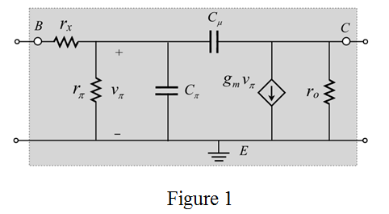
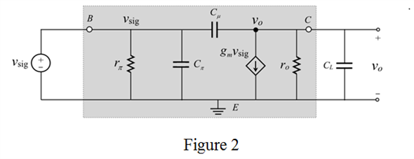
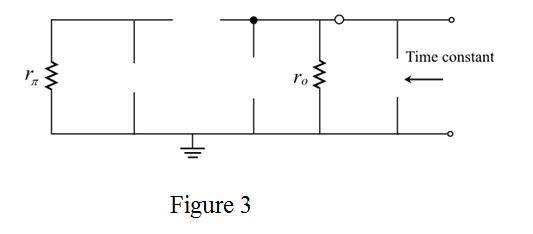
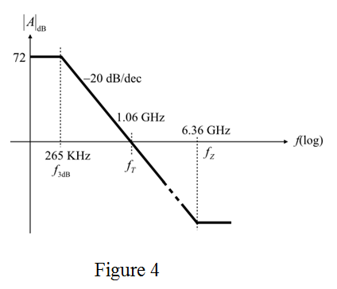

Step 1:
Draw the following high frequency equivalent circuit of common-emitter amplifier.

Step 2:
Apply the ideal signal source,  , remove the base spreading resistance,
, remove the base spreading resistance,  and the capacitor
and the capacitor  present between output node and ground. Here, represents the sum of the input capacitance and the parasitic capacitance between the collector and ground terminal.
present between output node and ground. Here, represents the sum of the input capacitance and the parasitic capacitance between the collector and ground terminal.
The modified circuit (or active loaded) is shown in Figure 2.

Step 3:
The s-domain representations of the capacitors are respectively.
Apply Kirchhoff’s current law at node,  .
.
Step 4:
Simplify further.
Hence, the gain expression is proved.
Step 5:
Write the formula for transconductance.

Substitute for  and 25 mV for
and 25 mV for .
.
Write the formula for resistance,  .
.
Substitute for  and 100 V for
and 100 V for .
.
Step 6:
The DC gain is obtained at zero frequency. The transfer function in s domain is,
Substitute 8 mA/V for  and
and  for
for .
.

Therefore, the value of DC gain is .
Step 7:
According to the open circuit time constant method, the time constant expression is derived by considering the various capacitors at a time in the circuit. The expression for time constant with contribution of capacitor  is calculated by removing all other capacitors in input side. This process is applicable to all other existed capacitors. The total capacitance at the output side is,
is calculated by removing all other capacitors in input side. This process is applicable to all other existed capacitors. The total capacitance at the output side is,
The circuit for determining the time constant is shown in Figure 3.

Step 8:
The total time constant is,
The pole at the output side is,
Substitute for , 1 pF for
, 1 pF for , and 0.2 pF for.
, and 0.2 pF for.
Therefore, the cut-off or 3 dB frequency is .
Step 9:
Write the formula for frequency of the zero.
Substitute 8 mA/V for  and 0.2 pF for .
and 0.2 pF for .
Therefore, frequency of the zero is .
The relation between the unity gain frequency and 3-dB frequency is,
Therefore, the frequency at which the gain is unity is .
Step 10:
Bode plot:
Convert the gain into dB.
Draw the Bode plot using 3 dB frequency, unity frequency, and zero frequency.

Hence, the Bode plot is drawn for the magnitude of the transfer function.